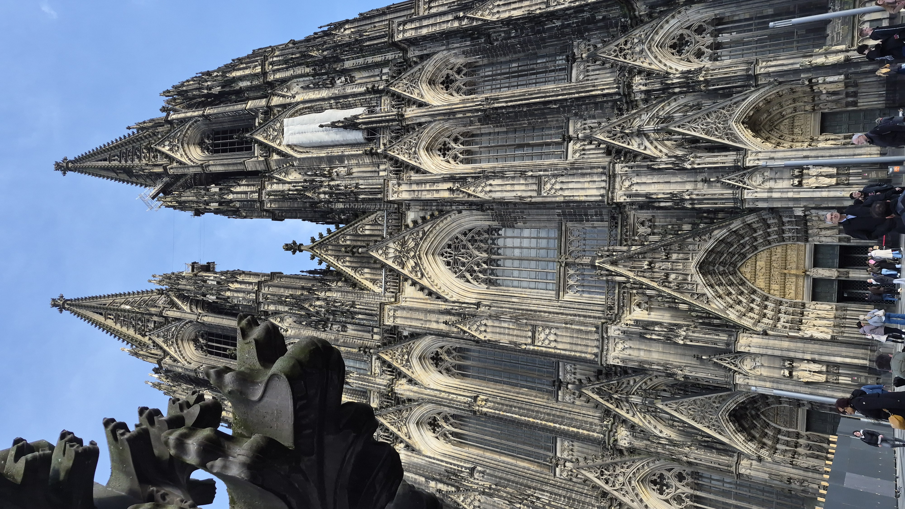
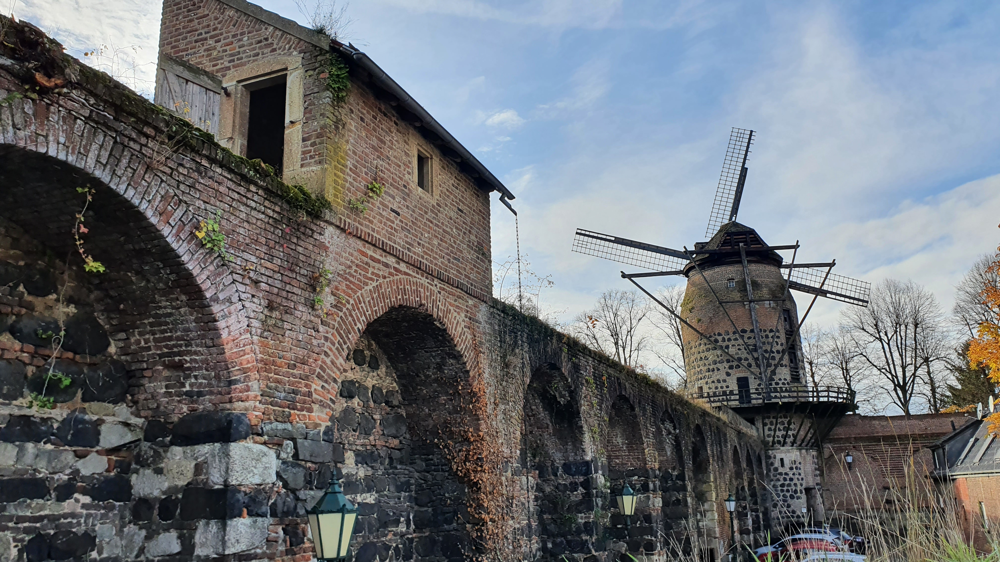
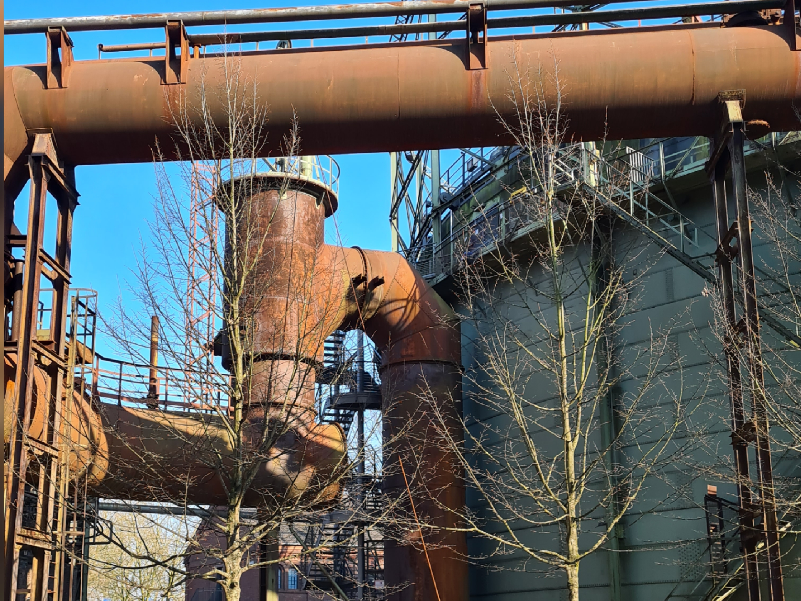
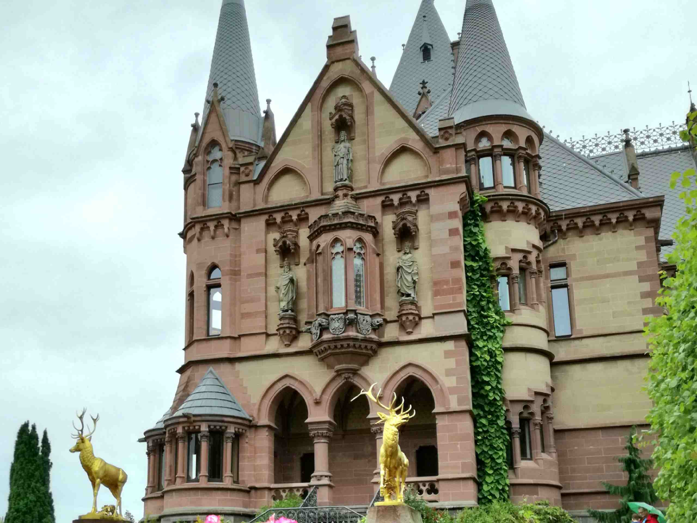
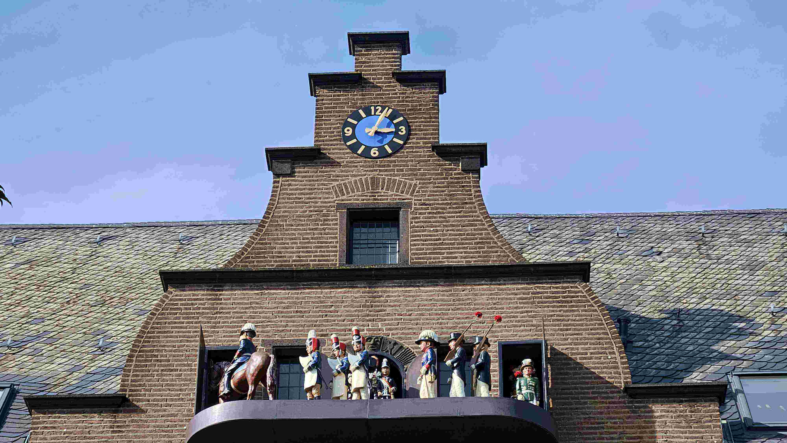

Unsere Themen
Touren außerhalb von Düsseldorf
Vom Kölner Dom bis zum Drachenfels, von der Industriekultur im Ruhrgebiet bis zur Kunst auf der Museumsinsel Hombroich: Wir nehmen Sie mit auf Entdeckungen im Umland.




Köln und der Drachenfels
Nicht weit rheinaufwärts warten die Domstadt, das mittelalterliche Zons und ein Gipfel mit Aussicht: Ausflüge, die sich wunderbar als Tagesausflug ab Düsseldorf eignen.
-
-

-
Ruhrgebiet
Im Ruhrgebiet erwarten Sie Industriekultur und Stadtgeschichte – von der Zeche bis zum Wasserbahnhof.
Neuss und Niederrhein
Nur einen Katzensprung entfernt: die Römerstadt Neuss, ein außergewöhnlicher Ort für Kunst und Natur und prunkvolle Schlösser am Niederrhein.
-

-
-
-
Nicht das Richtige gefunden?
Gerne gestalten wir eine individuelle Führung nach Ihren Wünschen.